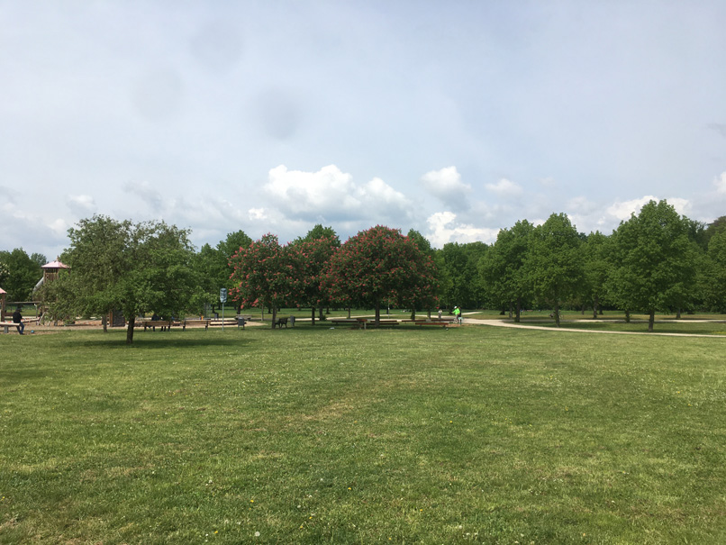

.png)
Welcome to the north-West of Frankfurt, Germany
When tourists come to Frankfurt, they usually want to see the European Central Bank, the historical downtown or the cozy neighborhoods of Sachsenhausen or Bornheim. To the western part of the city, tourists usually do not go. On the following pages I want to show you if and why the trip is worth it.
Ginnheim is mostly a neighborhood for young families and young professionals - but within its borders you can also find impressive mansions and simple social living concepts, great parks and sports arenas. Besides a hospital and the German Federal Reserve Bank, there is also the atheltics campus of the Goethe University of Frankfurt.
Ginnheim is a great mixture of being close to the business neighborhoods while having the charme of a small town. - Besides, I already have found a lot of great restaurants.
I just moved back here after twenty year, and am still exploring. But if you have any questions, please reach out to me.
To plan your trip to Frankfurt , I recommend you this page for further Information. And always cosinder to stop by in Ginnheim.
And now: Please enjoy the tour around my new neighborhood!

In spring time, the nature of the Niddapark is awakening after a long and cold winter.